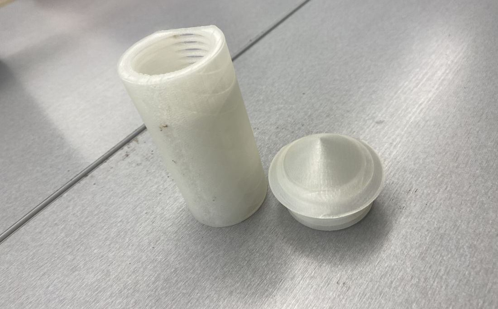
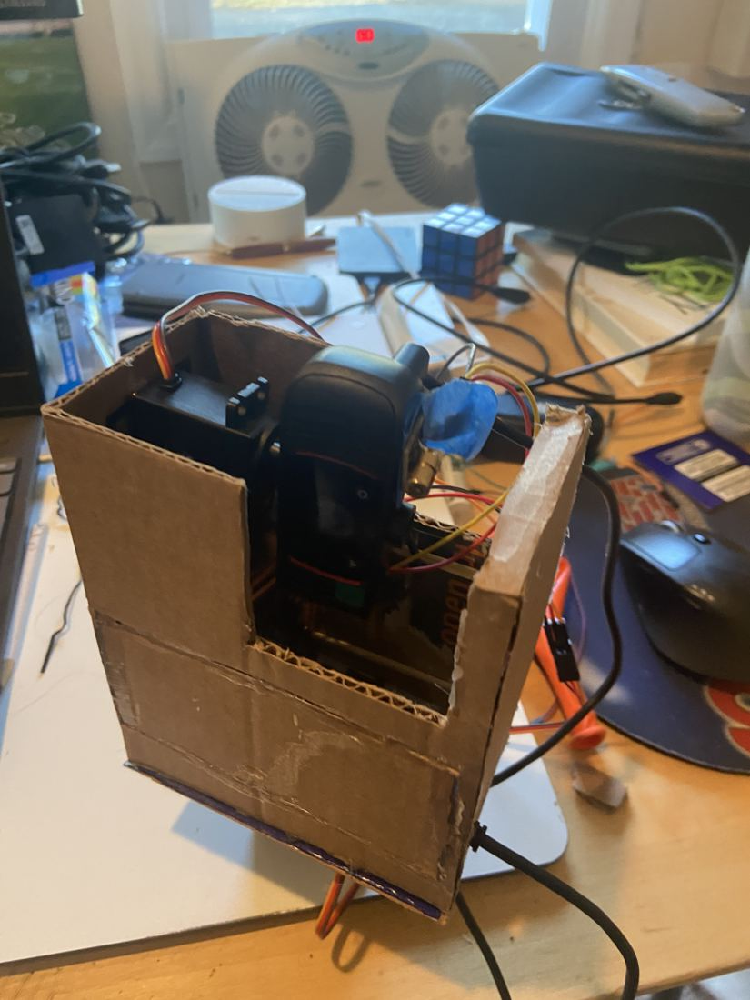

I build the thing that measures the thing.
- Now
- First-year engineering at Purdue, electrical side of the ROV team.
- Summer 2026
- Power instrumentation for drone research at Stevens.
- Paper
- IEEE MILCOM 2026, second of nine authors.
- Before
- Three years of TSA state wins for animatronics I wired, laid out and programmed.
- Looking for
- A Summer 2027 hardware internship.
Flagship · Stevens ML2P · summer 2026
AeroWatt: measuring where a drone's battery actually goes
Second author of nine on "AeroWatt: A Multi-Rail Forensic Power Measurement Platform for Energy-Aware Edge ML on UAS", accepted at IEEE MILCOM 2026.
- 1.07%
- mean agreement with a lab reference, over about 2,200 time-synced samples
- 280 µs
- one acquisition round across six channels
- 54
- trials, over 48 million data points

The problem
The program wanted to know what a camera, a radio and a CPU each cost in watts on a small drone running machine learning onboard. You cannot answer that from the battery alone. The platform is a Raspberry Pi and a Pixhawk 6C on a Holybro X500 V2, so every rail had to be tapped without changing how the airframe behaves.
What I built
Six series-inserted INA226 current monitors on an I2C bus, read by the same computer that runs the workload. I made pass-through cables that tap the Pixhawk's TELEM1 radio rail and GPS1 rail, then calibrated the monitors against a Monsoon power monitor on the bench. The reader is a persistent C process.
The protocol matters as much as the board. I used rfkill to cut WiFi and Bluetooth, pinned camera resolution, frame rate, exposure and gain so each is an independent variable, and pinned the CPU governor after a thermal preheat. Planned next: the same protocol on a Raspberry Pi 5 against a Jetson Orin NX.
What went wrong, and what it taught me
Lining the trace windows up sample by sample showed that an averaging artifact had overstated the thermal sensitivity about sixfold. The corrected figure in the paper is 46.2 ± 4.5 mW/°C for device temperature. Camera frame rate came out at 13.1 mW/fps at fixed resolution. I now check a result against the raw trace before I believe the summary.
Paper: IEEE MILCOM 2026, authors Hernandez, Panchacharam, Meharg, Xiao, Agastra, Wray, Chen, Jakubisin, Wang. Lab repo: github.com/macclab-stevens/ML2P
Other work
-
01
Purdue ROV, X-19 test bench power board
12 V in from an XT60, barrel jack or USB-C PD behind ideal-diode reverse protection, a buck down to 5 V for the Pi, and switched 12 V for thruster ESCs and solenoids. I drew the STM32 and CAN sheet so four INA237 monitors report per-rail voltage and current. I chose the LM61460 because the PKU5511ESI I started with needs 18 to 75 V in and cannot run from 12 V. In KiCad: 154 parts, ERC clean apart from five pin-type errors from the team library. Layout has not started and the lead has not signed off, so it is a design, not a built board.
-
02
Animatronics light and audio show
Custom Arduino shield PCBs in KiCad with their own 5 V buck board. Firmware drives 320 WS2812B LEDs per shield through a scene state machine (Intro, Launch, Explosion, Movement, Final) synced to a DFPlayer by pulse count. The KiCad history shows the power board and the Nano mounting being redone. First at TSA States three years running, second at Nationals.
Animatronics on video: Mars Rover, self-flipping book. Built with Fusion 360, Arduino and other mechanics.
-
03
Fireworks night light
Third place nationally.

The printed body and cap. -
04
Helios turret
Raspberry Pi and Arduino Uno steering servos from OpenCV tracking. It qualified for TSA Nationals and did not place.

Cardboard housing and servos on the bench. -
05
Self-balancing two-wheel robot
PID on tilt, with the gyroscope used to anticipate a fall instead of only reacting to one.
-
06
Assistive walking stick
Built with a friend from a micro:bit and ultrasonic sensors. Tested next to a staircase, it did not detect the drop. A failed design that told me something real.
-
07
Quadruped in MuJoCo
A policy-gradient agent in PyTorch, written from scratch, that teaches the Ant-v5 model to walk.
Contact
github.com/Selven11 · Purdue University, West Lafayette